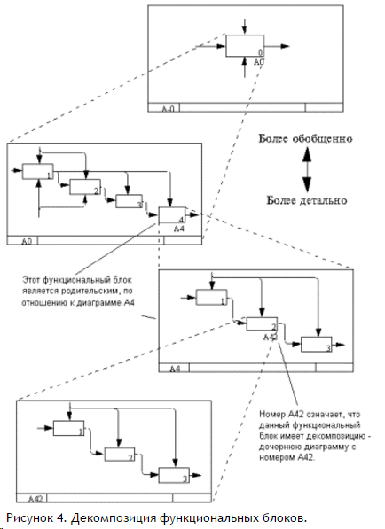

Третьим основным понятием стандарта IDEF0 является декомпозиция (Decomposition). Принцип декомпозиции применяется при разбиении сложного процесса на составляющие его функции. При этом уровень детализации процесса определяется непосредственно разработчиком модели.
Модель IDEF0 всегда начинается с представления системы как единого целого – одного функционального блока с интерфейсными дугами, простирающимися за пределы рассматриваемой области. Такая диаграмма с одним функциональным блоком называется контекстной диаграммой, и обозначается идентификатором “А-0”.
В пояснительном тексте к контекстной диаграмме должна быть указана цель (Purpose) построения диаграммы в виде краткого описания и зафиксирована точка зрения (Viewpoint).
Определение и формализация цели разработки IDEF0 – модели является крайне важным моментом. Фактически цель определяет соответствующие области в исследуемой системе, на которых необходимо фокусироваться в первую очередь. Например, если мы моделируем деятельность предприятия с целью построения в дальнейшем на базе этой модели информационной системы, то эта модель будет существенно отличаться от той, которую бы мы разрабатывали для того же самого предприятия, но уже с целью оптимизации логистических цепочек.
Точка зрения определяет основное направление развития модели и уровень необходимой детализации. Четкое фиксирование точки зрения позволяет разгрузить модель, отказавшись от детализации и исследования отдельных элементов, не являющихся необходимыми, исходя из выбранной точки зрения на систему. Например, функциональные модели одного и того же предприятия с точек зрения главного технолога и финансового директора будут существенно различаться по направленности их детализации. Это связано с тем, что в конечном итоге, финансового директора не интересуют аспекты обработки сырья на производственных станках, а главному технологу ни к чему прорисованные схемы финансовых потоков. Правильный выбор точки зрения существенно сокращает временные затраты на построение конечной модели.
В процессе декомпозиции, функциональный блок, который в контекстной диаграмме отображает систему как единое целое, подвергается детализации на другой диаграмме. Получившаяся диаграмма второго уровня содержит функциональные блоки, отображающие главные подфункции функционального блока контекстной диаграммы и называется дочерней (Child diagram) по отношению к нему (каждый из функциональных блоков, принадлежащих дочерней диаграмме соответственно называется дочерним блоком – Child Box). В свою очередь, функциональный блок - предок называется родительским блоком по отношению к дочерней диаграмме (Parent Box), а диаграмма, к которой он принадлежит – родительской диаграммой (Parent Diagram). Каждая из подфункций дочерней диаграммы может быть далее детализирована путем аналогичной декомпозиции соответствующего ей функционального блока. Важно отметить, что в каждом случае декомпозиции функционального блока все интерфейсные дуги, входящие в данный блок, или исходящие из него фиксируются на дочерней диаграмме. Этим достигается структурная целостность IDEF0 – модели. Наглядно принцип декомпозиции представлен на рисунке 4. Следует обратить внимание на взаимосвязь нумерации функциональных блоков и диаграмм - каждый блок имеет свой уникальный порядковый номер на диаграмме (цифра в правом нижнем углу прямоугольника), а обозначение под правым углом указывает на номер дочерней для этого блока диаграммы. Отсутствие этого обозначения говорит о том, что декомпозиции для данного блока не существует.
